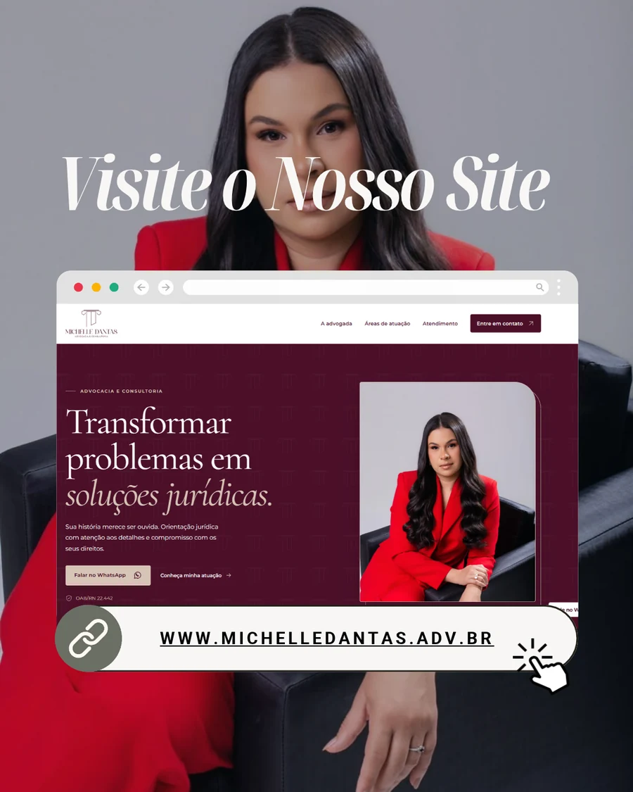
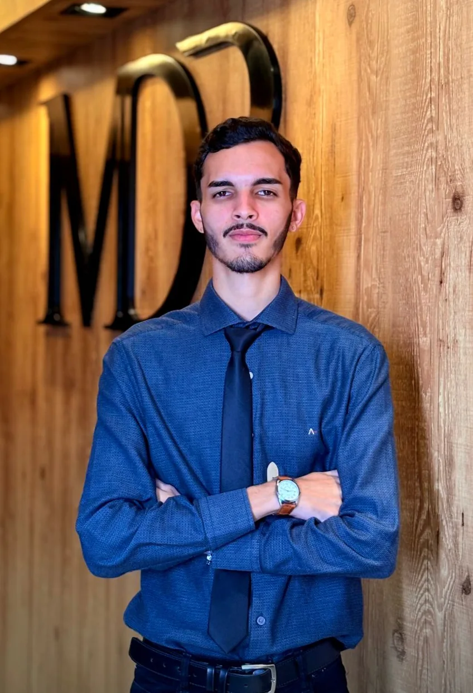
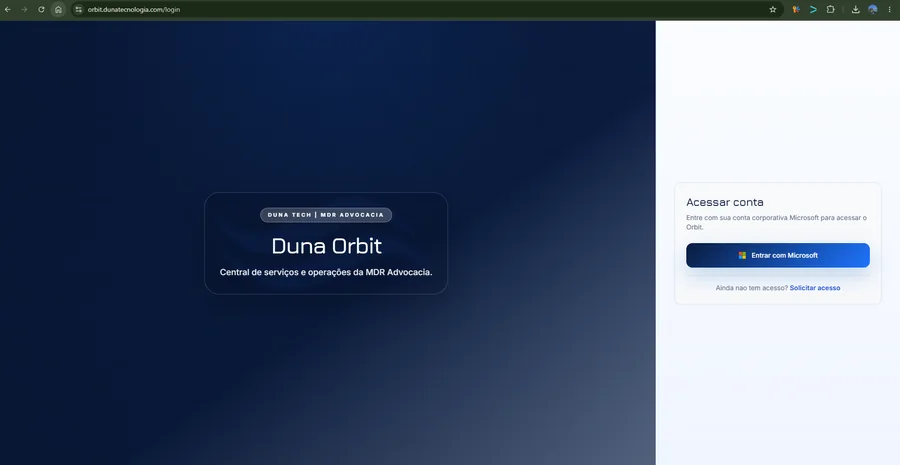
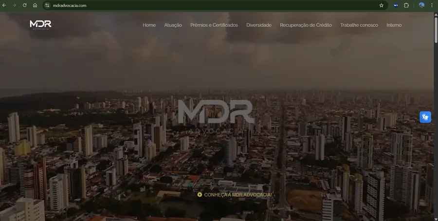
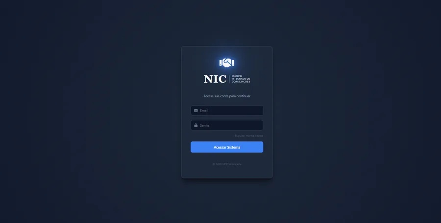
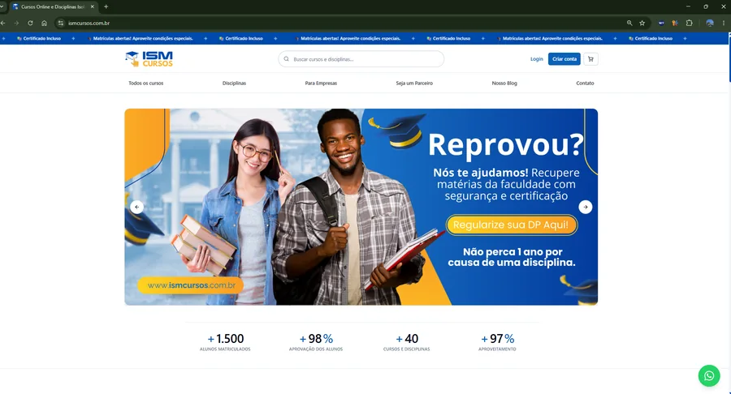
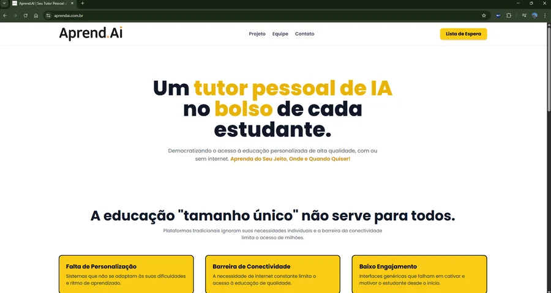
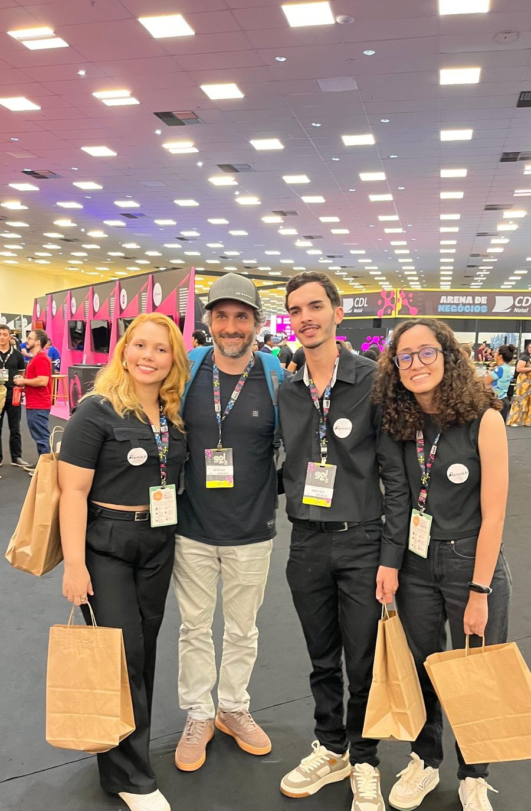
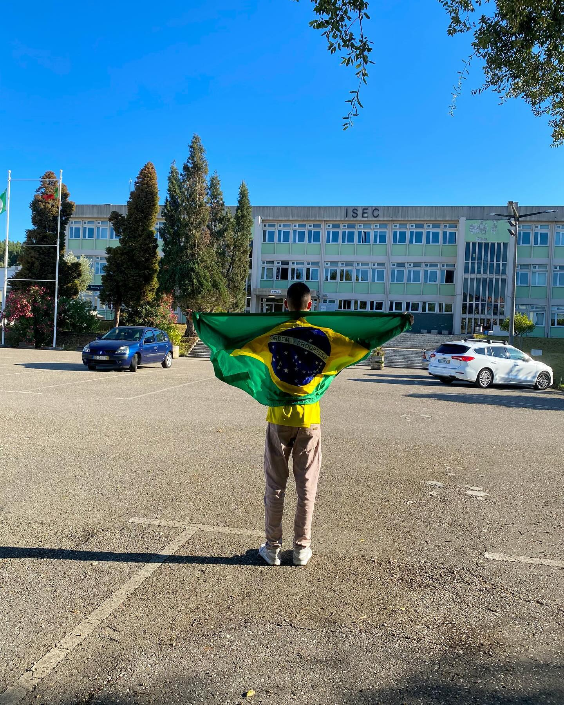

Landing page em destaque
Dra. Michelle Dantas
Landing page de advocacia com identidade visual em vinho e dourado, navegação responsiva e acesso direto ao atendimento pelo WhatsApp.
Desenvolvedor full stack Analista de TI
Desenvolvo sites, sistemas internos e automações para simplificar rotinas de trabalho e melhorar a experiência de quem usa.

Sites profissionais, produtos digitais e sistemas que integram ferramentas e pessoas.

Landing page em destaque
Landing page de advocacia com identidade visual em vinho e dourado, navegação responsiva e acesso direto ao atendimento pelo WhatsApp.

SaaS interno · 2026
Central de operações de TI com chamados, kanban, aprovações e integração com GLPI e Microsoft Planner.

Site institucional · 2025–2026
Portal institucional para apresentar o escritório, suas áreas de atuação e os canais de atendimento.

Sistema jurídico · 2025–2026
Sistema interno para organizar processos, prazos e comunicações da operação jurídica.

Plataforma educacional · 2025–2026
Plataforma de ensino com catálogo, área do aluno, compra de cursos e automações.

Site com agendamento · 2026
Site comercial com catálogo de serviços, escolha de profissional e agendamento com confirmação via WhatsApp.

Sistema acadêmico · 2025
Sistema de reservas para a Escola de Música da UFRN com Google Calendar e notificações automáticas por e-mail.

Aplicativo · 2026
MVP para registrar alertas de insegurança nas paradas do circular da UFRN e avisar a comunidade.

Produto educacional · PWA
Tutor educacional com IA pensado para funcionar offline e ampliar o acesso em locais com internet limitada.
Meu trabalho combina desenvolvimento de software e experiência prática com suporte e infraestrutura de TI.
MDR Advocacia
Desenvolvimento e manutenção de sistemas internos, site institucional, automações administrativas e infraestrutura de TI.
Escola de Música da UFRN
Criação do Marcato, integração com Google Calendar e melhorias no portal institucional.
Biblioteca Central Zila Mamede · UFRN
Instalação e manutenção de equipamentos, configuração de software e atendimento aos usuários.
Interfaces responsivas para sites, sistemas e aplicativos.
APIs, regras de negócio e integração com bancos de dados.
Automações, implantação e manutenção de sistemas.

Projeto de educação com IA offline reconhecido entre os 10 destaques.
Ver registro do Supernova
Participação em hackathon de inteligência artificial e aprendizado de máquina em Portugal.
Ver registro do hackathon
Formação internacional em Engenharia Informática no ISEC.
Ver registro do intercâmbioPara projetos de desenvolvimento web, automação ou oportunidades profissionais, fale comigo.